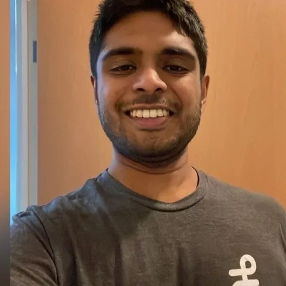

Saptarshi
Sinha
Ph.D. student in computer vision at the University of Bristol, working on long-term video understanding.
I'm in my final year, supervised by Prof. Dima Damen in the School of Computer Science, and part of MaVi and ViLab. My work looks at how models can follow what happens across long egocentric videos: tracking objects over time, counting repetitions, and recognising rare actions.
From 2018 to 2022 I was an AI researcher at Hitachi's Central Research Laboratory in Tokyo, working on long-tailed and activity recognition, which led to three granted Japan patents. Before that, I completed my MTech at IIT Bombay with Prof. Subhasis Chaudhuri. My Ph.D. is funded by an EPSRC Doctoral Training Studentship.

Recent news
All newsWhareformer accepted to ECCV 2026. Code, project page and announcement.
Research visit to Naver Labs Europe, Grenoble. Looking forward to strong collaborations.
Prime and Reach is out on arXiv. Data and project page.
HD-EPIC is out on arXiv. See the project page.
Research
Long-term and egocentric video understanding, repetition counting, and long-tailed recognition. Publications first, then patents.
2026
2024
2023
2019
* Equal contribution.
Patents
- Granted 2026
Learning system, worker action recognition system, and recognition model learning method
Japan patent JP7798700B2, worker action recognition. Saptarshi Sinha, Hiroki Ohashi
- Granted 2025
Image processing apparatus, image processing method, and image processing system
Japan patent JP7636276B2, wide-angle activity recognition. Saptarshi Sinha, Katsuyuki Nakamura, T. Akiyama
- Granted 2024
Recognition management apparatus, recognition management system, and recognition management method
Japan patent JP7422621B2, class-difficulty weighting for class-imbalance. Saptarshi Sinha, Hiroki Ohashi, Katsuyuki Nakamura
News
Papers, talks and milestones, newest first.
2026
Whareformer accepted to ECCV 2026. Code, project page and announcement.
Research visit to Naver Labs Europe, Grenoble. Looking forward to strong collaborations.
2025
Prime and Reach is out on arXiv. Data and project page.
HD-EPIC is out on arXiv. See the project page.
2024
Attended and presented at ACCV 2024, Vietnam.
Every Shot Counts accepted at ACCV 2024. See the project page.
Every Shot Counts is up on arXiv.
2023
2022
2021
Co-organised the MMAct Challenge at ActivityNet@CVPR 2021, on cross-modal action recognition and localisation. Challenge page.
2020
Presented my first international paper at ACCV 2020.
My first paper accepted at ACCV 2020: Class-wise difficulty-balanced loss for solving class-imbalance. Paper.
2019
Attended ICCV 2019, Korea.
Paper published at IEICE conferences.
2018
Joined Hitachi R&D, Japan, supervised by Hiroki Ohashi and Katsuyuki Nakamura.
CV
Education, experience, patents and service. Download the full CV (PDF).
Experience
- Mar – May 2026
Visiting researcher
Naver Labs Europe, Grenoble, France
Research visit on human-motion generation and egocentric video understanding. The collaboration is ongoing.
- 2018 – 2022
AI researcher
Hitachi Central Research Laboratory, Tokyo, Japan
Developed difficulty-based methods for class-imbalance and long-tailed recognition, published at ACCV, WACV and IJCV. Built activity-recognition systems from egocentric and wide-angle video, and co-organised the MMAct challenge at CVPR 2021.
Education
- 2022 – now
Ph.D., Computer Science
University of Bristol, UK
Advisor: Prof. Dima Damen. Long-term multi-modal video understanding. Funded by an EPSRC Doctoral Training Studentship.
- 2016 – 2018
MTech, Electrical Engineering
IIT Bombay, India
Advisor: Prof. Subhasis Chaudhuri. CPI 9.13/10.
- 2012 – 2016
BTech, Electronics and Telecommunication
IEM, Kolkata, India
CPI 8.68/10.
Awards and honours
- 2024/25
EgoVis Distinguished Paper Award for HD-EPIC
- 2022
EPSRC (UKRI) Doctoral Training Studentship, covering full tuition and stipend
- 2016
GATE, Electronics and Communication: All-India Rank 62 of 152,318
Patents
- Granted 2026
Learning system, worker action recognition system, and recognition model learning method
JP7798700B2. Saptarshi Sinha, H. Ohashi
- Granted 2025
Image processing apparatus, method and system
JP7636276B2, wide-angle activity recognition. Saptarshi Sinha, K. Nakamura, T. Akiyama
- Granted 2024
Recognition management apparatus, system and method
JP7422621B2, class-difficulty weighting for class-imbalance. Saptarshi Sinha, H. Ohashi, K. Nakamura
Talks
- Invited
University of Oxford; Twelve Labs research seminar (recording)
- Conferences
Presented my work at CVPR 2023, Vancouver, and ACCV 2024, Vietnam
Service and teaching
- Reviewing
CVPR, ICCV, ECCV, NeurIPS, BMVC, ACCV, IJCV, TIP, Neurocomputing, Pattern Recognition Letters
- Teaching
Teaching assistant for Machine Learning, Applied Deep Learning, Applied Data Science, and Image Processing and Computer Vision at Bristol, and Machine Learning at IIT Bombay
- Organising
Co-organised the MMAct Challenge at ActivityNet@CVPR 2021
- Community
Postgraduate research representative for about 300 EPSRC-funded research students
- Collaborations
Naver Labs Europe, Keio University, and the Universities of Twente, Leiden and Bath
Travel
Places I’ve explored between deadlines.
Barcelona, Spain
May 2026
Four days in Catalonia: Gaudí’s Barcelona, from Casa Batlló and Park Güell to the Sagrada Família, a morning among the jagged peaks of Montserrat, and a day out to Girona’s old town and the coves of Tossa de Mar on the Costa Brava.
Annecy, France
May 2026
A weekend in the French Alps during my research visit to Naver Labs Europe in Grenoble. Canals winding through the old town, the twelfth-century Palais de l’Isle, and the turquoise water of Lake Annecy.
Grenoble, France
March–April 2026
Home during my research visit to Naver Labs Europe. Grenoble sits where three mountain ranges meet: wide views from the Bastille over the Isère, and a spring walk to the waterfalls and caves of the Cuves de Sassenage.
Paris, France
April 2026
Two days in Paris: the Louvre and the Eiffel Tower on the first, then Île de la Cité, from the stained glass of Sainte-Chapelle to the restored Notre-Dame, and on to the Arc de Triomphe.
Geneva, Switzerland
April 2026
A weekend based in Geneva: the Jet d’Eau on the lakefront, a day up at Glacier 3000 crossing the Peak Walk, a suspension bridge strung between two summits, and an afternoon by the lake in Montreux.
Antalya & Pamukkale, Türkiye
December 2025
On from Cappadocia to the southwest: the white travertine terraces of Pamukkale and the ruins of ancient Hierapolis above them, then Antalya, with Hadrian’s Gate lit up at night, the Düden Waterfalls, and sunrise over the sea.
Göreme, Türkiye
December 2025
Christmas in Cappadocia: hundreds of hot-air balloons rising over the valleys at dawn, an afternoon among the fairy chimneys and the rock castle of Uçhisar, and fresh snow on the last morning.